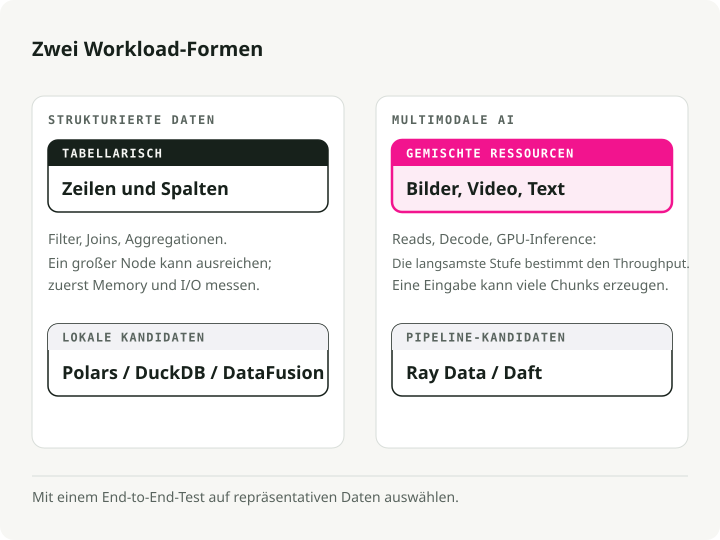
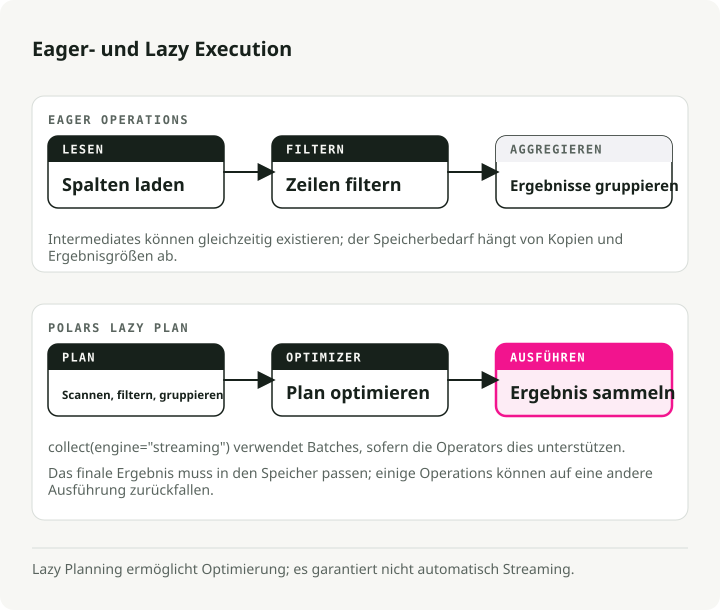
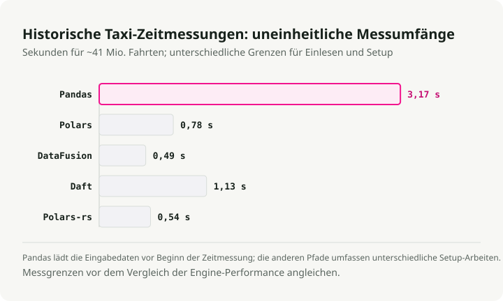
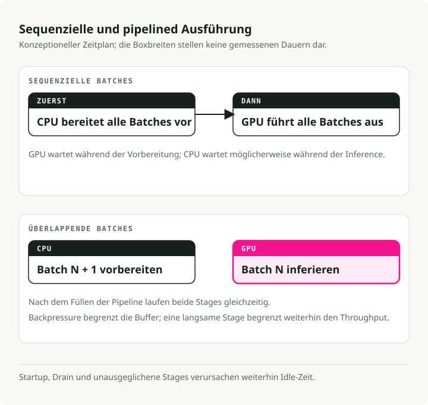
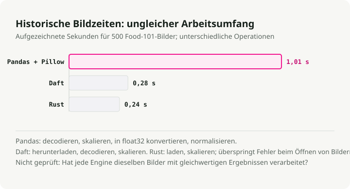
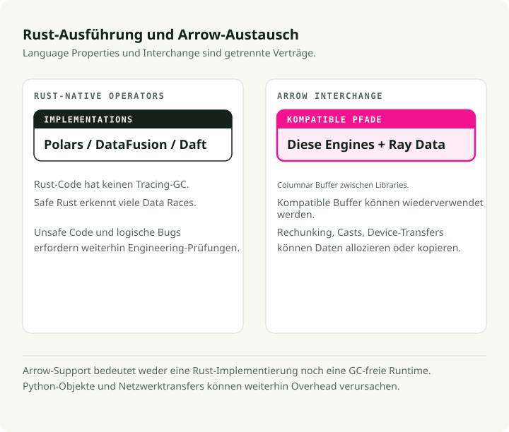
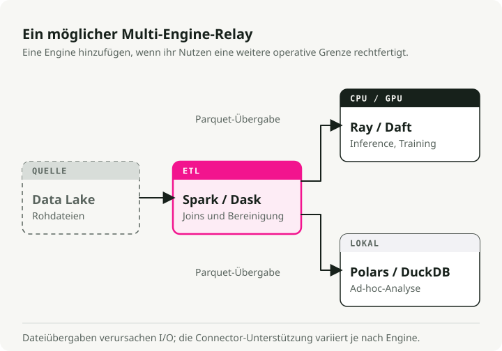
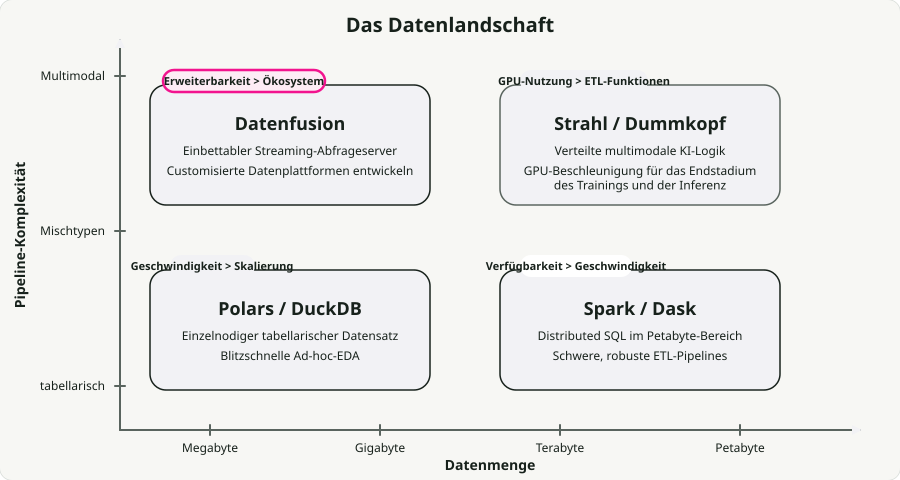

Automatische Übersetzung
Dieser Artikel wurde automatisch aus der englischen Originalversion übersetzt.
Vergleich moderner Datenverarbeitungsengines: Polars, DataFusion, Daft, Ray Data, Pandas und Spark
Jahrelang kümmerte sich Pandas um die Arbeit mit tabellarischen Daten im Speicher, während Apache Spark für die verteilt arbeitenden Verarbeitungen zuständig war. Diese Aufteilung funktionierte gut, solange die Daten strukturiert waren.
Moderne Arbeitslasten sind jedoch nicht mehr immer strukturiert. Heute kommen neben tabellarischen Daten auch Pipelines für Bilder, Audio und Video zum Einsatz. Wenn außerdem die Inferenz auf GPUs hinzukommt, werden die Garbage Collection der JVM sowie der GIL von Python nicht nur lästig, sondern bilden sogar Engpässe. Das ist ein wesentlicher Grund dafür, warum eine neue Generation von Enginen, die auf Rust und Apache Arrow basieren, an Bedeutung gewinnt.
Im letzten Jahr habe ich den Großteil meiner Einzelknoten-Pipelines auf Polars umgestellt und wollte herausfinden, wie es im Vergleich zu den anderen neuen Lösungen abschneidet. Dafür führte ich Benchmarks mit Polars, DataFusion, Daft, Ray Data und Spark an echten Datensätzen durch – für die tabellarischen Daten wurden New Yorker Taxifahrten verwendet, für die multimodalen Daten Bilder aus dem Food-101-Set.
Der gesamte Code befindet sich in Repository für die Engine-Vergleichs-Demo. Klonen Sie es und führen Sie die Benchmarks auf Ihrer eigenen Hardware aus – Ihre Ergebnisse werden sich von meinen unterscheiden, und genau darum geht es.
Zusammenfassung: Bei den für Marketingzwecke geeigneten Benchmarks erzielen native Rust-Engine auf einem einzelnen Knoten eine Geschwindigkeitssteigerung um das 94-fache im Vergleich zu Pandas. Bei echten Arbeitslasten sind die Verbesserungen zwar geringer, aber konstant – sowohl Polars als auch DataFusion eignen sich hier als solide Standardlösungen. Für multimodale Pipelines laufen Engine wie Ray Data und Daft bis zu 18 Mal schneller als Spark, da sie die GPUs tatsächlich auslasten. Es gibt keinen allgemeinen Sieger; die richtige Wahl hängt von Ihren Daten, der Skalierung sowie davon ab, ob GPUs im Einsatz sind.
Arten von Datenverarbeitungsarbeitslasten
Engine sind auf bestimmte Aufgaben spezialisiert, weshalb die erste Frage, die beantwortet werden muss, ist, um welche Art von Arbeitslast es sich eigentlich handelt. Die größte Unterscheidung erfolgt dabei zwischen strukturierten und multimodalen Daten.

Strukturierte / tabellarische Daten. Filtern, Aggregieren, Verknüpfen. Leistungsbeschränkung durch die CPU, in der Regel im Arbeitsspeicher. Ein großer Teil dieser Aufgaben wird auf verteilten Clustern ausgeführt, obwohl diese ursprünglich gar nicht verteilt werden mussten — etwa 90 % der Abfragen verarbeiten weniger als 1 TB an Daten., was heutzutage problemlos auf einem einzigen Rechner untergebracht werden kann.
Multimodale KI. Bilder, Audio, Video. Bei der Inferenz ist die Leistung stark von der GPU abhängig, doch die Vorverarbeitung auf der CPU ist oft das Limit. Deep-Learning-Modelle verarbeiten Daten schneller, als CPUs sie decodieren können, weshalb auf einem Standard- g6.xlarge (4 CPUs pro GPU) – Die Auslastung der GPU fällt unter 20 %. Der gesamte Pipeline wird letztendlich durch die Geschwindigkeit begrenzt, mit der Daten an die GPU geliefert werden können.
Die neuen Engines richten sich gleichzeitig auf beide Anforderungen aus. Rust verleiht ihnen Geschwindigkeit, Arrow ermöglicht einen kopierfreien Datenaustausch zwischen Prozessen, und die Streaming-Ausführung erlaubt es ihnen, mit Datensätzen umzugehen, die größer sind als der RAM.
Teil 1: Einzelknotenverarbeitung
Das Engpassproblem bei Pandas ist kein Fehler – es liegt im Design. Pandas lädt Dateien eifrig in den RAM, kopiert Zwischendaten bei fast jeder Operation und bleibt aufgrund des GIL auf einem einzigen Thread beschränkt. In dem PDS-H-Benchmarks Beim Skalierungsfaktor 10 benötigt Pandas etwa 365 Sekunden, um eine Standardabfrageserie abzuschließen. Der Streaming-Engine von Polars erledigt dieselbe Aufgabe in 3,89 Sekunden – das sind etwa 94-mal schnellere Ergebnisse.

Polars: Verarbeitung tabellarischer Daten
Polars hat in vielen Teams, mit denen ich gesprochen habe, Pandas als Standard für umfangreiche lokale ETL-Prozesse ersetzt. Es ist in Rust geschrieben und nutzt eine träge Ausführung: Anstatt jede Zeile sofort auszuführen, erstellt es einen Abfragesplan, optimiert diesen (durch Vorverlagern von Prädikaten, Kürzen von Projektionen sowie Spalten), und führt die Operation anschließend in strömenden Batch-Verarbeitungen auf allen CPU-Kernen aus.
Der Unterschied wird mit zunehmender Datenmenge größer. Bei Skalierungsfaktor 100 (~100 GB), Der Streaming-Engine von Polars benötigte 23,94 Sekunden, verglichen mit 152,27 Sekunden für seine eigene In-Memory-Engine – das entspricht einer Geschwindigkeitssteigerung von etwa 6x bei Datenmengen, die größer sind als der RAM. engine_comparison_examples.ipynb:
import polars as pl
# scan_parquet reads only the schema — no data loaded yet
q = (
pl.scan_parquet("yellow_tripdata_2024-01.parquet")
.filter(
(pl.col("trip_distance") > 5.0)
& (pl.col("total_amount") > 30.0)
)
.group_by("payment_type")
.agg(
pl.col("total_amount").mean().alias("avg_fare"),
pl.col("trip_distance").mean().alias("avg_distance"),
pl.len().alias("trip_count"),
)
)
# The entire plan is optimized and executed here, in parallel
result = q.collect()
Der Unterschied zu Pandas liegt nicht in der API, sondern in der Architektur. Polars erstellt zunächst den Ausführungsplan und optimiert den gesamten Pipeline-Prozess, bevor es die Daten verarbeitet. filter wird in den Parquet-Leser weitergereicht, wodurch ganze Zeilengruppen übersprungen werden. Nur die im Abfragedefinierten Spalten werden vom Datenträger geladen. Pandas kann das nicht – jede Zeile wird unmittelbar nach der Parsing-Aktion ausgeführt, und Zwischenduplikate entstehen überall.
Apache DataFusion: Erweiterbarer Abfragemotor
Während Polars eine Bibliothek ist, die man direkt verwendet, DataFusion ist der Engine, auf dem andere Engines entwickelt werden. Er liefert die Leistung. InfluxDB 3.0, GreptimeDB, sowie Apples Comet Spark-Akcelerator.
In November 2024 wurde DataFusion zum schnellster Einzelknoten-Engine zur Abfrage von Parquet-Dateien in ClickBench, vor DuckDB, chDB und ClickHouse auf derselben Hardware. Das Embucket-Team führte später weitere Tests durch TPC-H im Skalierungsfaktor 1000 (~1 TB) auf einem einzigen Knoten dazu kommt noch. Das ist eine nützliche Zahl, die man im Hinterkopf behalten sollte, sobald jemand angibt, dass er einen Cluster benötigt. engine_comparison_examples.ipynb:
from datafusion import SessionContext
ctx = SessionContext()
ctx.register_parquet("taxi", "yellow_tripdata_2024-01.parquet")
# SQL executed directly against Parquet — no intermediate copies
df = ctx.sql("""
SELECT payment_type,
COUNT(*) AS trip_count,
AVG(trip_distance) AS avg_distance,
AVG(total_amount) AS avg_fare
FROM taxi
WHERE trip_distance > 5.0 AND total_amount > 30.0
GROUP BY payment_type
ORDER BY trip_count DESC
""")
result = df.to_pandas()
Die Stärke von DataFusion liegt in seinem Modularität. Die Erweiterungs-APIs umfassen benutzerdefinierte Kataloge, Tabellenanbieter, Optimierungsregeln sowie Ausführungspläne – weshalb sie immer dann zum Einsatz kommen, wenn jemand eine eigene Datenplattform entwickelt oder einen Abfragemotor in sein eigenes Produkt integriert.
Daft: Multimodales Datenverarbeitung
absurd es ist die Lösung, die multimodale Daten ernst nimmt. Bilder, Audio, Video, Embeddings – das sind echte Datentypen im DataFrame und keine undurchsichtigen Bytes. Pandas behandelt ein Bild als Byte-Array, Spark serialisiert es über die JVM, doch Daft verfügt über native Rust-Expressionen zur Dekodierung von Bildern, zum Abrufen von URLs sowie zur Erstellung von Tensor-Strukturen – ganz ohne Python-Schleifen dazwischen. engine_comparison_examples.ipynb:
import daft
df = daft.read_parquet("yellow_tripdata_2024-01.parquet")
result = (
df.where(
(daft.col("trip_distance") > 5.0)
& (daft.col("total_amount") > 30.0)
)
.groupby("payment_type")
.agg(
daft.col("total_amount").mean().alias("avg_fare"),
daft.col("trip_distance").mean().alias("avg_distance"),
daft.col("trip_distance").count().alias("trip_count"),
)
.collect()
)
Die API wirkt vertraut, wenn man mit Pandas vertraut ist, doch der zugrunde liegende Engine ist derselbe Rust + Arrow-Stack, wie er in Polars und DataFusion verwendet wird. Daft zeigt seine Vorteile insbesondere dann, wenn die „Zeilen“ im DataFrame Bilder, PDFs oder Tensor sind.
Benchmark: Leistung auf einem einzigen Knoten
Ich habe alle vier Engines sowie den nativen Rust-Code über Polars-rs auf etwa 41 M NYC-Gelbtaxifahrten für das gesamte Jahr 2024. Die vollständigen Ergebnisse finden Sie im Demo-Repository:

Bei dieser Größe (~660 MB im Parquet-Format) arbeiten alle modernen Engines schnell. Die behauptete 94-fache Geschwindigkeitssteigerung von Polars gegenüber Pandas stammt aus dem PDS-H-Benchmark – einem synthetischen Analyse-Test. Bei meiner Arbeitslast mit 41 Millionen Zeilen erzielte ich zwar eine tatsächliche, konstante Verbesserung gegenüber Pandas, aber keineswegs einen Faktor von 94. Interessanter ist, dass Polars, DataFusion, Daft sowie die reine Rust-Implementierung über Polars-rs bei dieser Arbeitslast alle ungefähr auf dem gleichen Niveau liegen. DataFusion ist in Bezug auf die Gesamtverarbeitungszeit leicht schneller. Polars ist außerdem am angenehmsten zu programmieren und ein solider Allrounder.
Teil 2: Umgang mit multimodalen Daten
Tabellarbasierte ETL-Prozesse reduzieren in der Regel die Datenmenge: Durch Filtern, Aggregationen wird weniger gespeichert, als eingelesen wird. Multimodale KI-Pipelines tun das Gegenteil: Ein einziger Dokumentpfad kann sich in Dutzende von Textabschnitten sowie Embedding-Vektoren aufteilen.
Spark behandelt Bilder und Audiodateien als binäre Blöcke. Die Verarbeitung in Python erfordert einen Wechsel zwischen JVM und Python über Py4J, anschließende Verarbeitung mit Pillow oder OpenCV sowie schließlich eine Serialisierung zurück. Diese Hin- und Rückreise dominiert in vielen praktischen Arbeitslasten die Gesamtverarbeitungszeit.
Pipelined-Erstellung und GPU-Nutzung
Spark parallelisiert die Partitionen über mehrere Kerne, doch der Nachteil liegt in seiner stufenbasierten (massenhaften, synchronen) Ausführungsweise. Innerhalb einer einzigen Aufgabe werden alle Schritte – Download, Dekodierung, Klassifizierung – nacheinander auf einem Kern ausgeführt, wobei es keine asynchrone Überlappung gibt. Zudem muss jede Aufgabe innerhalb einer Stufe abgeschlossen sein, bevor die nächste Stufe beginnt. Während die CPUs die Vorverarbeitung durchführen, stehen die GPUs untätig herum; umgekehrt stehen die GPUs still, während die CPUs die Inferenz durchführen. Jede Stufe erzeugt ihre Ausgabe, bevor die nächste startet, was zusätzlich zu den bereits bestehenden Speichernähten führt.

Pipelinierte Ausführung ist die Alternative. Anstatt die einzelnen Phasen nacheinander auszuführen, überlappt der Engine die I/O-Aufgaben, die CPU-Berechnungen sowie die GPU-Inferenz, sodass zu jedem Zeitpunkt nur das langsame Element wartet.
Benchmark: Bildverarbeitung
Ich habe die Bildverarbeitung anhand von 500 echten Fotografien getestet. Datensatz Food-101. Ergebnisse aus dem Demo-Repository:

Polars und DataFusion werden hier nicht aufgeführt, da sie keine nativen Bildverarbeitungsfunktionen bieten – die Bildverarbeitung müsste dann sequenziell über Python abgewickelt werden, wodurch ein faire Vergleich nicht möglich wäre. Die relevanten Zahlen: Dafts native Rust-Bildverarbeitungsfunktionen sind 3,6-mal schneller als Pandas + Pillow, und reiner Rust ist insgesamt im gesamten Pipeline-Ablauf 4,2-mal schneller als Pandas.
Teil 3: Verteilte Verarbeitung
Sobald eine einzelne Maschine nicht ausreicht, muss man entscheiden, wie die Arbeit verteilt wird. Genau hier beginnen die architektonischen Unterschiede zwischen den Engines wirklich Bedeutung zu erlangen.
Apache Spark
Spark bleibt weiterhin meine erste Wahl für ETL-Aufgaben im Petabyte-Bereich mit unstrukturierten Shuffle-Vorgängen. Die Fehlertoleranz durch die RDD-Linienverfolgung funktioniert tadellos, das Ökosystem ist riesig (Databricks, EMR) und mehrere TB große Join-Operationen sind hier bereits gut etablierte Praxis. Bei KI-Aufgaben hingegen versagt Spark jedoch. Die Aufgaben werden auf JVM-Executorn geplant, die keine GPU-Support haben, wodurch die GPUs untätig bleiben müssen, während auf CPUs vorverarbeitet wird. distributed_spark.ipynb:
from pyspark.sql import SparkSession
from pyspark.sql import functions as F
spark = SparkSession.builder \
.appName("TaxiETL") \
.config("spark.sql.adaptive.enabled", "true") \
.getOrCreate()
orders = spark.read.parquet("s3a://lake/taxi/*.parquet")
zones = spark.read.csv("s3a://lake/taxi_zones.csv", header=True)
# Spark excels at this: joining massive tables with a shuffle
result = (
orders
.filter(F.col("trip_distance") > 5.0)
.join(zones, orders.PULocationID == zones.LocationID, "inner")
.groupBy("Borough")
.agg(
F.sum("total_amount").alias("total_revenue"),
F.avg("total_amount").alias("avg_fare"),
)
.orderBy(F.desc("total_revenue"))
)
Ray-Daten: GPU-Nutzung
Ray-Daten wurde speziell für AI-Arbeitlasten entwickelt. Anstelle der Stage-Barrier von Spark verwendet es ein Modell für Streaming-Anwendungen das sorgt dafür, dass die GPUs ständig mit Ressourcen versorgt werden. Die Funktion, die ihre Notwendigkeit rechtfertigt, ist die gemischte Ressourcenscheduling-Logik: Man kann angeben, dass ein Prozess „1 GPU, 4 CPUs“ benötigt und ein anderer ausschließlich CPUs, wobei Ray den Rest automatisch berechnet.
Amazon gab an, dadurch Einsparungen erzielt zu haben. mehr als 120 Millionen US-Dollar pro Jahr durch den Umzug spezifischer Workloads von Spark zu Ray. Die Ergebnisse ihrer PoC zeigten eine 91-prozentig bessere Kosteneffizienz sowie 13-mal mehr Daten pro Stunde; in der Produktivumgebung lag die Kosteneffizienz bei 82 Prozent pro GiB S3-Eingabedaten.
import ray
ray.init()
ds = ray.data.read_images("s3://my-bucket/food101/")
class ImageClassifier:
def __init__(self):
import torch
from torchvision.models import resnet18, ResNet18_Weights
self.model = resnet18(weights=ResNet18_Weights.DEFAULT).cuda()
self.model.eval()
self.preprocess = ResNet18_Weights.DEFAULT.transforms()
def __call__(self, batch):
import torch
tensors = torch.stack([
self.preprocess(img) for img in batch["image"]
]).cuda()
with torch.no_grad():
preds = self.model(tensors)
return {
"prediction": preds.argmax(dim=1).cpu().numpy(),
"confidence": preds.max(dim=1).values.cpu().numpy(),
}
# ActorPoolStrategy creates persistent GPU workers
predictions = ds.map_batches(
ImageClassifier,
compute=ray.data.ActorPoolStrategy(size=4),
num_gpus=1,
batch_size=64,
)
predictions.write_parquet("s3://output/predictions/")
Ein wichtiger Aspekt, den man kennen sollte: Je mehr CPU-Kerne pro GPU hinzugefügt werden, desto besser skaliert Ray Data – während andere Engines an einem Plateau ankommen. In Anyscale’s Benchmark-Daten, der Übergang von einem Verhältnis von 4:1 auf 32:1 zwischen CPU und GPU führte zu einer Dreifachbeschleunigung bei der Bildinferenz, da die CPU-Prozesse endlich mit der Leistung der GPU mithalten konnten.
Daft (Distributed)
Daft skaliert sich durch seine Flottillenmotor: Ein Swordfish-Worker pro Node, wobei Flotilla die globale Scheduling-Funktion für den gesamten Cluster übernimmt. Swordfish kümmert sich um die lokale Ausführung in Rust sowie um die I/O-Pipelines in Kombination mit Rechenoperationen mittels kleiner Batch-Streams, sodass jeder Node ständig beschäftigt bleibt, ohne auf die nächste Phase warten zu müssen.
Bei vier multimodalen Workloads lief Daft zusammen mit Flotilla 2–18-mal schneller als Spark. Bei der anspruchsvollsten Aufgabe (Video-Objekterkennung mit YOLO11n) benötigte Spark über 3,5 Stunden, während Daft die Verarbeitung in weniger als 12 Minuten abschloss – das sind 18-mal schnellere Ergebnisse, hauptsächlich weil Spark viel Zeit mit der Serialisierung sowie mit den Zwischenschritten zwischen den Verarbeitungsstufen verbringt.
Eine Einschränkung: Anyscale, das Unternehmen hinter Ray, hat veröffentlicht ihre eigenen Benchmarks Es wird gezeigt, wie Ray Data die Lücke bei Instanzen mit hoher CPU-Leistung durch manuelle Anpassungen schließt oder umkehrt. Derzeit überholen sich diese beiden Ansätze alle drei Monate gegenseitig. distributed_daft.ipynb:
import daft
from daft import col
# Daft's Flotilla engine distributes work across the cluster
df = daft.read_parquet("s3://data-lake/pdf_metadata/*.parquet")
# Download PDFs — Daft parallelizes downloads in Rust
df = df.with_column("pdf_bytes", col("pdf_url").url.download())
# Define a GPU UDF for embedding generation
@daft.udf(return_dtype=daft.DataType.list(daft.DataType.float32()))
class TextEmbedder:
def __init__(self):
from sentence_transformers import SentenceTransformer
self.model = SentenceTransformer("all-MiniLM-L6-v2", device="cuda")
def __call__(self, text_col):
texts = text_col.to_pylist()
embeddings = self.model.encode(texts, batch_size=32)
return [emb.tolist() for emb in embeddings]
# Daft schedules CPU downloads and GPU embeddings simultaneously
df = df.with_column("embedding", TextEmbedder(col("text")))
df.write_parquet("s3://output/embeddings/")
Verteilter Head-to-Head-Modus
| Funktion | Spark | Ray-Daten | |
|---|---|---|---|
| Ausführungsmodell | Task-pro-Kern, partitionbasiert | Streaming-Aufgaben und Akteure | Swordfish pro Knoten – strömende Batch-Verarbeitung |
| Stärken | Massive SQL/ETL-Prozesse, Fehlertoleranz | Heterogene Rechenarchitekturen, GPU-Auslastung | Multimodales Pipelining mit begrenzter Speicherkapazität |
| GPU-Nutzung | Ausgezeichnet (explizite Zuweisung der Ressourcen) | Ausgezeichnet (asynchrone Pipelining von Eingabe/Ausgabe und Berechnungen) | |
| Abstimmungsaufwand | Hohe Ressourcenlast (Ausführer-Memory, Kerne, Partitionen) | ||
| Am besten geeignet für | Petabyte-basierte tabellarische ETL-Prozesse | Training/Inferenz mit gemischter CPU+GPU-Architektur | Multimodale Datenladung für PyTorch |
Teil 4: Die Rolle von Rust und Arrow
Unterhalb des Wettbewerbs ist die Konvergenz die interessantere Geschichte. Polars, Daft, DataFusion sowie der Kern von Ray teilen alle dieselbe Grundlage: Apache Arrow Für das In-Memory-Format wird Rust für die Konkurrenzverwaltung genutzt.

Das ist nicht nur architektonische Sauberkeit. Der Arrow PyCapsule-Schnittstelle (__arrow_c_stream__ Das Protokoll ermöglicht den Datenaustausch zwischen Engines ohne Serialisierung: Die Verarbeitung erfolgt in DataFusion, wobei das Ergebnis kostengünstig an Polars oder PyArrow weitergegeben werden kann; mehrmodale Vorausverarbeitung wird in Daft durchgeführt, wobei die Arrow-Daten direkt in einen PyTorch DataLoader eingespeist werden.
from datafusion import SessionContext
import polars as pl
# Compute in DataFusion (Rust-native execution)
ctx = SessionContext()
ctx.register_parquet("events", "events.parquet")
df = ctx.sql("""
SELECT user_id, COUNT(*) as event_count
FROM events WHERE event_type = 'purchase'
GROUP BY user_id HAVING COUNT(*) > 5
""")
# Zero-copy conversion to Arrow, then to Polars
arrow_table = df.to_arrow_table()
df_polars = pl.from_arrow(arrow_table)
# Continue analysis in Polars
result = df_polars.with_columns(
pl.col("event_count").rank().alias("rank")
).sort("rank")
Warum also Rust anstelle der JVM?
-
Keine Pausen durch Garbage Collection. Eigentumsmodell und Ausleihmechanismen ersetzen die GC, was bedeutet, dass es keine „Stop-the-World“-Pausen sowie keine unvorhersehbaren Latenzspitzen gibt. Die Out-of-Memory-Fehler, die bei großem Skalenniveau in JVM-Systemen auftreten, verschwinden größtenteils.
-
Keine Kosten durch Objekt-Header. Die JVM fügt jedem Objekt 12–16 Bytes an Objekt-Header hinzu. Bei Milliarden kleiner Objekte stellt das bereits einen erheblichen Teil des Speicherverbrauchs dar. Rust ist davon nicht betroffen.
-
Thread-Sicherheit zur Kompilierzeit. Das Typsystem von Rust weist Datenkonkurrenzen bereits vor dem Erstellen der Binärdatei zurück, sodass bei mehrthreadiger Ausführung keine typischen, subtilen Konkurrenzfehler auftreten.
In Kombination mit der kolonialen Speicherstruktur von Arrow entfällt das Serialisierungs-Bottleneck, das in herkömmlichen JVM-Stacks bis zu 30 % der CPU-Zyklen verbraucht.
Teil 5: Mehrere Engine einsetzen
Die ehrliche Antwort lautet: Man wählt nicht einfach eine einzige Engine aus. Man kombiniert sie.

In der Produktion sieht dieses Vorgehen in der Regel wie die Verwendung eines Relais aus. Rohdaten aus einem Data Lake werden mithilfe von Spark (oder Dask, falls Ihr Team ausschließlich Python verwendet) aufbereitet und zu Parquet- oder Delta-Tabellen zusammengeführt. Diese Tabellen gelangen anschließend in Ray Data oder Daft, wo die finale Verarbeitung stattfindet – beispielsweise GPU-basierte Inferenz, Erstellung von Embeddings oder multimodale Transformationen – Aufgaben, für die Spark ursprünglich nicht konzipiert war. Für ad-hoc-Analysen sowie lokale Entwicklung bieten Polars und DuckDB sofortige Rückmeldungen, ohne dass ein Cluster gestartet werden muss.
Was diese Architektur möglich macht, sind offene Formate: Parquet, Delta, Iceberg, Arrow. Jeder Komponenten in diesem Stack kann diese Formate nativ lesen und schreiben, wodurch der Datenaustausch zwischen den verschiedenen Schritten lediglich über einen Dateipfad erfolgt.
Zusammenfassung der Anwendungsfall-Kategorien der Engines

| Aufgabe | Empfohlenes Tool | Kompromiss |
|---|---|---|
| Ad-hoc-Analyse auf einem Laptop | Polars / DuckDB | Geschwindigkeit > Skalierbarkeit |
| Massives SQL ETL (Petabyte-Bereich) | Apache Spark | Zuverlässigkeit > Geschwindigkeit |
| Python-eigene Skalierung | Dask | Einfachheit > Optimierung |
| Training von LLMs / Computer Vision | Ray Data | GPU-Nutzung > ETL-Funktionen |
| Multimodale Datenladung | Unsinnig | Entwicklererfahrung > Ökosystem |
| Entwicklung eigener Abfragemotoren | DataFusion | Erweiterbarkeit > Vorinstallierte Funktionen |
Diagonale Skalierung
Lange Zeit bestand die Wahl zwischen Skalierung nach oben (eine größere Maschine) oder Skalierung nach außen (mehr Maschinen). Polars Cloud es wird etwas dazwischen gemacht, was als diagonales Skalieren bezeichnet wird: Es erfolgt eine horizontale Skalierung beim Lesen aus der Cloud-Speicherung, um die I/O-Leistung auszunutzen, anschließend wird das System auf einen einzigen großen Knoten zusammengefasst, sobald Filter und Aggregationen die Daten reduziert haben – wodurch das verteilte Shuffeln vollständig weggelassen wird.
Der kontraintuitive Aspekt: Eine größere, teurere Instanz kann letztendlich günstiger pro Auftrag sein, weil sie die GPU-Nutzung so hoch treibt, dass die Gesamtausführungszeit schneller abnimmt als die Stundensätze ansteigen.
Versuchen Sie es selbst
Die Repositorium für die Begleit-Demo enthält alles, was Sie benötigen, um diese Benchmarks nachzustellen:
# Install dependencies
uv sync
# Run the tabular benchmark (~2.9M NYC taxi trips)
uv run python -m engine_comparison.benchmarks.tabular
# Run the multimodal benchmark (500 real food photos)
uv run python -m engine_comparison.benchmarks.multimodal
# Run native Rust benchmarks (Polars-rs + image crate)
cd rust_benchmark && cargo run --release && cd ..
Das Repository enthält außerdem Notebooks für Vergleiche von APIs nebeneinander sowie Docker Compose-Einstellungen für lokale, verteilte Ausführungen von Spark, Ray und Daft.
Wichtige Erkenntnisse
-
Verteilen Sie Daten nicht, wenn es nicht unbedingt nötig ist. Polars und DataFusion können auf einem einzigen Rechner bis zu etwa 1 TB verarbeiten und bieten dabei konstante Geschwindigkeitsvorteile gegenüber Pandas – in intensiven Analyse-Benchmarks wie PDS-H sogar um das 94-fache. Wenden Sie sich erst an einen Cluster, wenn Sie tatsächlich die Grenzen eines einzelnen Nodes erreicht haben, und nicht früher.
-
Die Grenzen von Pandas sind architektonisch bedingt. Eager Execution, Single-Threading sowie Zwischenkopien sind bewusste Designentscheidungen, die zu Engpässen führen, sobald die Datenmengen groß werden. Lazy Execution mit Predicate Pushdown und Spalten-Pruning ändert dies.
-
Pipelined Execution ist im Vergleich zu Staged Execution vorteilhafter für GPU-Arbeit. Bei Spark bleiben die GPUs untätig, während die CPUs die Daten vorverarbeiten. Ray Data und Daft überlappen I/O-, CPU- und GPU-Arbeit, sodass keine Ressourcen untätig auf die nächste Phase warten müssen.
-
Verwenden Sie jede Engine für ihre Stärken. Spark für ETL-Aufgaben im Petabyte-Bereich, Polars und DuckDB für ad-hoc-Analysen, Ray Data für GPU-basierte Trainingspipelines, Daft für das Laden multimodaler Daten sowie DataFusion für benutzerdefinierte Abfragemotoren.
-
Rust + Arrow bilden die gemeinsame Grundlage. Es ist kein Zufall, dass Polars, DataFusion, Daft und Ray hier zusammenlaufen – dadurch entfallen GC-Pausen, Overhead durch die Serialisierung zwischen Prozessen sowie eine ganze Reihe von Konkurrenzfehlern.
Wenn Sie unsicher sind, wo Sie anfangen sollen: Nutzen Sie zunächst Polars auf einem einzelnen Rechner, anschließend Daft oder Ray Data, wenn GPUs zum Einsatz kommen. Spark nur dann, wenn Sie tatsächlich mit Petabytes arbeiten.
Referenzen
Benchmarks und Leistungsdaten
- Polars PDS-H-Benchmarks - Polars Streaming im Vergleich zu Pandas bei SF-10 (94-fach) und SF-100 (6,4-fach im Vergleich zum In-Memory-Modus) DataFusion ClickBench-Ergebnisse (November 2024) - Schnellster Parquet-Abfragemotor für einzelne Knoten Embucket: TPC-H SF-1000 auf DataFusion - Vollständige TPC-H-Belastung bei etwa 1 TB auf einem einzigen Node Migration von Amazon Spark zu Ray - Einsparungen von 120 Mio. USD pro Jahr, 82 % Effizienz bei den Produktionskosten Daft Flotilla-Benchmarks - 2–18-mal schneller als Spark bei multimodalen Workloads Anyscale Ray im Vergleich zu Daft Benchmarks - Ray Data: Durchschnittliche Beschleunigung von etwa 30 % bei multimodalen Anwendungen
Engine und Frameworks
- Polars - Rust-DataFrame-Bibliothek mit verzögerter Ausführung Apache DataFusion - Einbaufähiger Rust-Abfragemotor (GitHub)
- unsinnig - Multimodaler, natives verteilter DataFrame Ray - Verteilter Rechenrahmen für KIDateninterne Strukturen)
- Apache Spark - Verteilter ETL- und SQL-Engine DuckDB - Analytischer SQL-Engine im Prozessinneren Dask - Parallelrechnung, die direkt in Python implementiert ist
Architektur und Ökosystem
- Polars Cloud: Diagonale Skalierung - Dynamische vertikale/horizontale Skalierung Architektur der Daft Flotilla - Schwertfisch + dezentraler Engine-Cluster der Flotte Apache DataFusion Comet - Der Spark-Akcelerator wurde ursprünglich bei Apple entwickelt Apache Arrow - Kolonialer In-Memory-FormatFlug-RPC, PyCapsule-Schnittstelle)
- InfluxDB 3.0 + DataFusion - Zeitreihendatenbank, die auf DataFusion basiert GreptimeDB - Überwachungsdatenbank unter Verwendung von DataFusion
Demo-Repo
- Engine-Vergleichs-Demo - Begleitcode zu diesem Artikel: Benchmarks, Notebooks sowie Docker Compose für Spark/Ray/Daft Protokolle von NYC-Taxifahrten - NYC TLC-Daten zu gelben Taxis (Parquet, ~2,9 M Zeilen/Monat) Datensatz Food-101 - 101.000 Nahrungsbildern aus der ETH Zürich (Bossard et al., ECCV 2014)